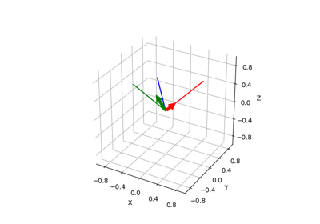
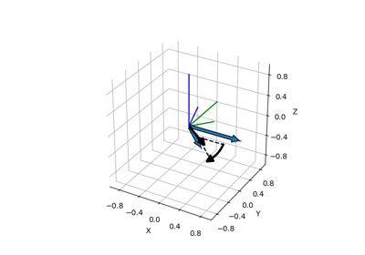
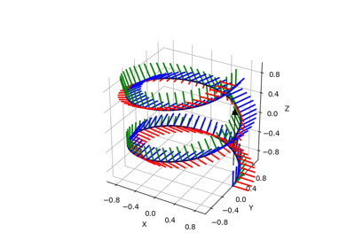
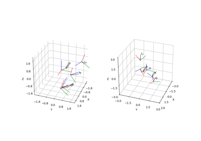
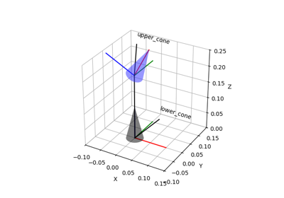
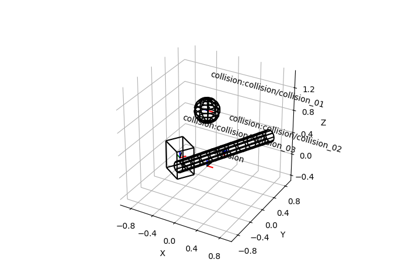
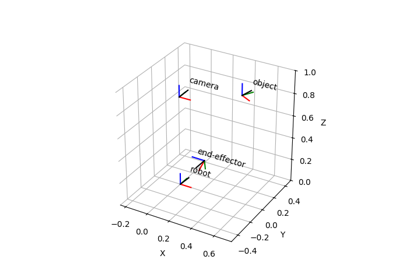
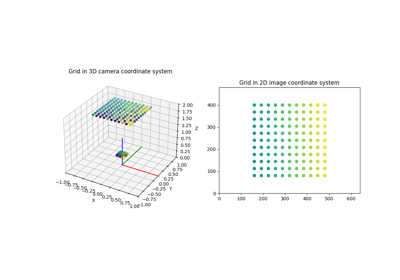
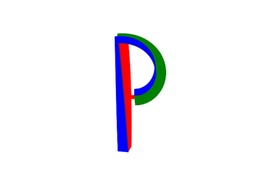
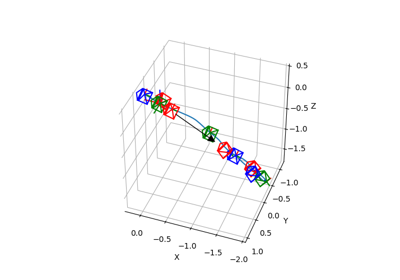

Matplotlib Figures¶



Construct Rotation Matrix from Two Vectors
Construct Rotation Matrix from Two Vectors



Axis-Angle Representation from Two Direction Vectors
Axis-Angle Representation from Two Direction Vectors



Pose Trajectory

Plot with Respect to Different Reference Frames
Plot with Respect to Different Reference Frames



URDF with Meshes



URDF with Collision Objects



Transformation Manager
Compare Rotation Sampling Methods
Compare Rotation Sampling Methods

Camera Projection



Plot Straight Line Paths

Camera Trajectory


Convention for Rotation: Passive / Active, Extrinsic / Intrinsic
Convention for Rotation: Passive / Active, Extrinsic / Intrinsic